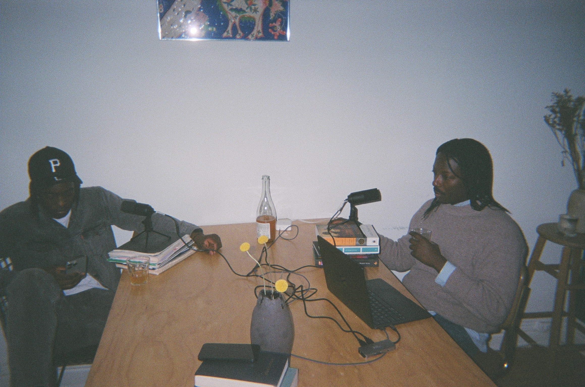
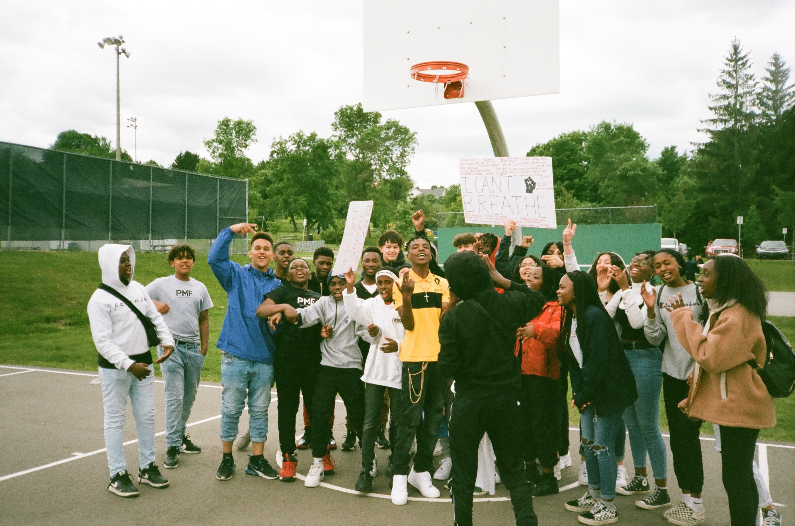
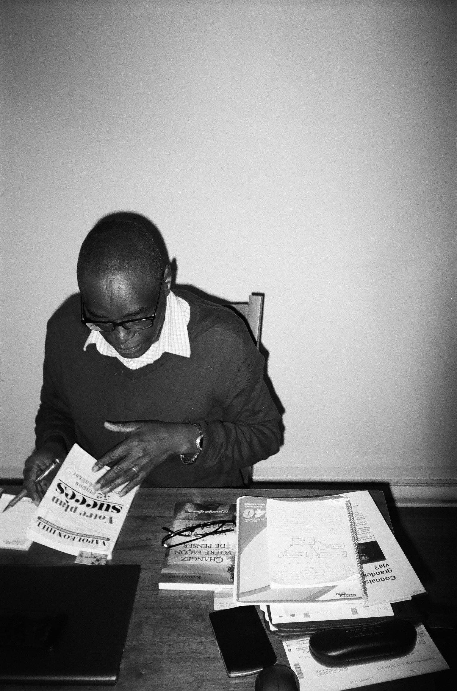
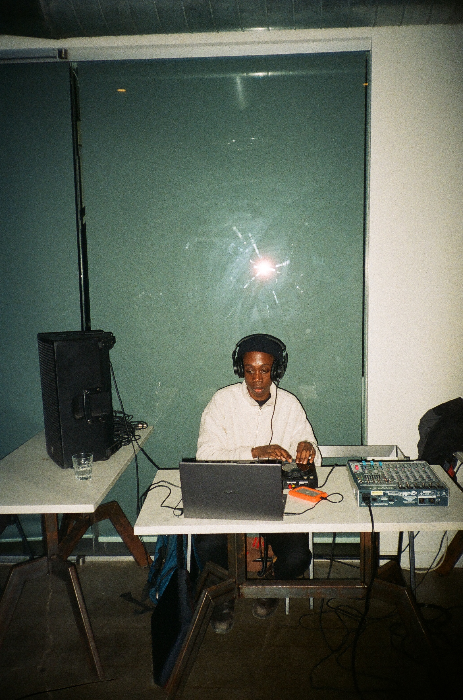
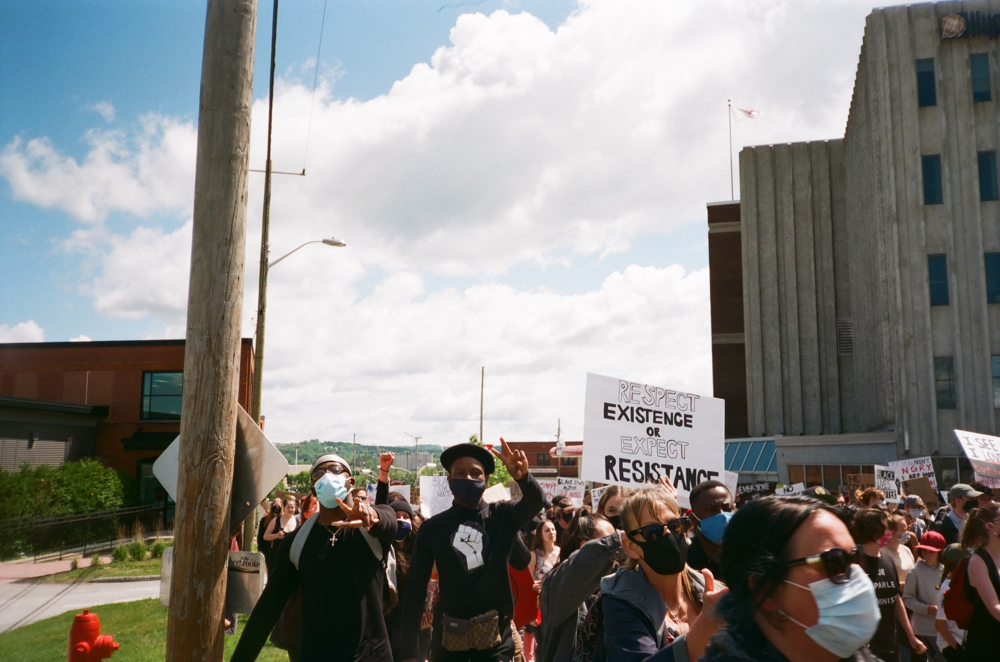

DatSoundRadio
Each artist carries a story. Each creative discipline holds its own language. Practices are thus peculiar to individual journeys. At DatSoundRadio, we explored the conversations between artists and the essence of their creative processes. The vulnerability of intimate interviews and the resonance of carefully selected songs. We captured, edited, and photographed moments of artistic revelation. Through our platform, we connected the permanence of artistic vision to the shifting and evolving nature of creative practices. We juxtaposed interviews, videos, and curated events and playlists to encapsulate the relationship between intention and evolution, between structure and spontaneity. We created DatSoundRadio as a space to witness and celebrate embodied knowledge. It is a portrait of creative consciousness, a living archive. I had a multidisciplinary role; I edited videos, filmed some of radio episodes and interviews, photographed and documented our creative journeys as well as designed our website.




